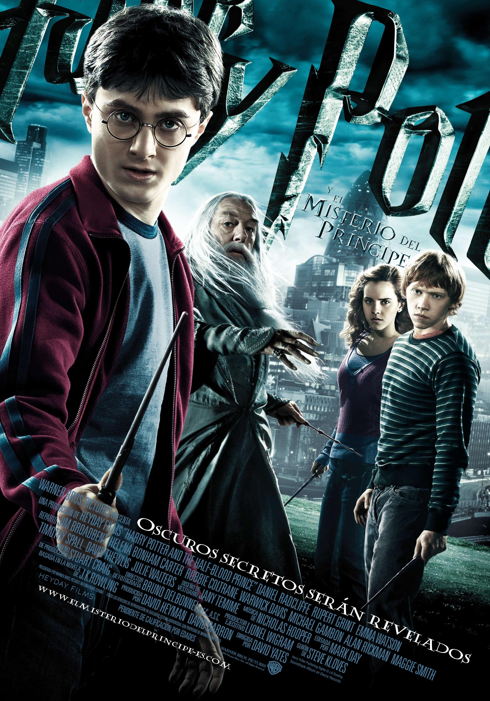

Harry Potter y el misterio del príncipe (2009)

Sinopsis
Con Lord Voldemort y sus Mortífagos sembrando el caos tanto en el mundo mágico como en el muggle, Hogwarts ha dejado de ser un lugar seguro. Albus Dumbledore decide preparar a Harry para la batalla final y lo lleva a explorar los recuerdos del pasado de Voldemort, descubriendo el secreto de su inmortalidad: los Horrocruxes. Mientras tanto, Harry encuentra un misterioso libro de Pociones perteneciente al "Príncipe Mestizo" que lo ayuda a destacar en clase, a la vez que las tensiones románticas entre los estudiantes se complican y un peligroso plan secreto se desarrolla dentro del propio castillo.
Ficha Técnica
- Año: 2009
- Director: David Yates
- Duración: 153 minutos
Reparto Principal
- Daniel Radcliffe como Harry Potter
- Emma Watson como Hermione Granger
- Rupert Grint como Ron Weasley